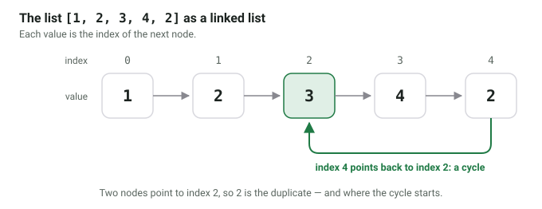

Floyd's cycle-detection algorithm uses two pointers. Those two pointers are sometimes called tortoise and hare. The tortoise is slow and just moves one step at a time. The hare is fast and moves two steps at a time.
from typing import Optional
class Node:
def __init__(self, val):
self.val = val
self.next = None
def detect_loop(linked_list_head: Node) -> Optional[Node]:
slow = linked_list_head
fast = linked_list_head
while slow and fast and fast.next:
slow = slow.next
fast = fast.next.next
if slow == fast:
return slow # Found loop and return starting point
This is pretty nice as it needs $\mathcal{O}(1)$ additional space and has a time complexity of $\mathcal{O}(n)$.
You can also use this for various competitive coding tasks if you are given an unsorted array of $n$ numbers where the values are guaranteed to be in 1 to $n$.
Duplicate Number finding
Given is an array with n+1 numbers, each being in the range 1 to n. There is one number appearing multiple times (could be more than twice). Find that number.
See Leetcode 287
You can interpret the list of numbers as a linked list. The value is the pointer to the same index.
For example, the list [1, 2, 3, 4, 2] represents the graph below:
{kind=link}

The number 2 is the duplicate here. With the following algorithm, we can
find it in $\mathcal{O}(n)$ with $\mathcal{O}(1)$ additional space.
from typing import List
def find_duplicate(nums: List[int]) -> int:
slow = 0
fast = 0
n = len(nums)
while slow != fast or slow == fast == 0:
slow = nums[slow]
fast = nums[nums[fast]]
slow = nums[0]
while slow != fast:
slow = nums[slow]
fast = nums[fast]
return fast